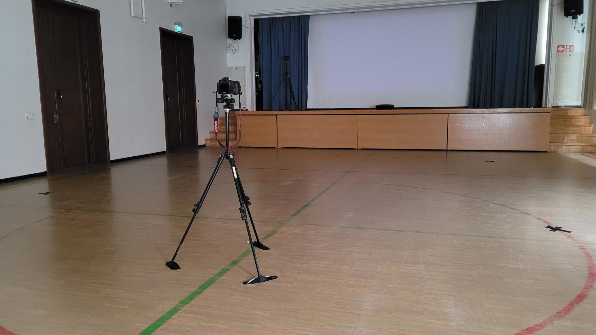
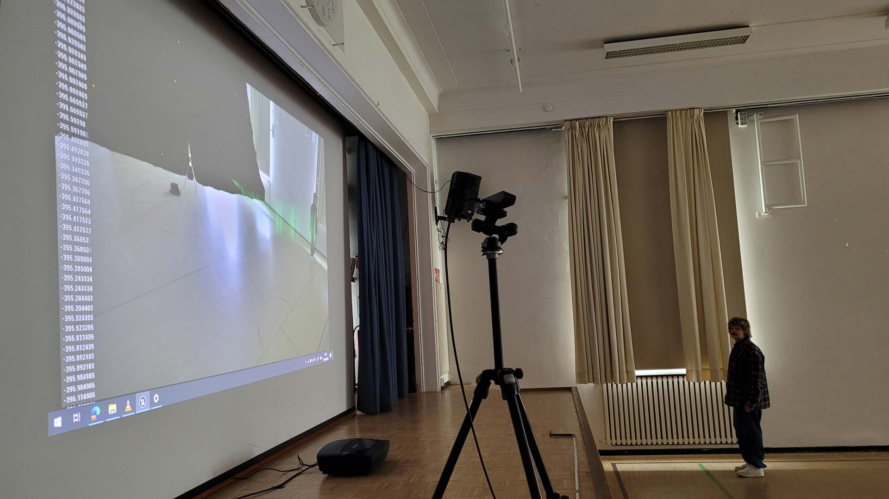
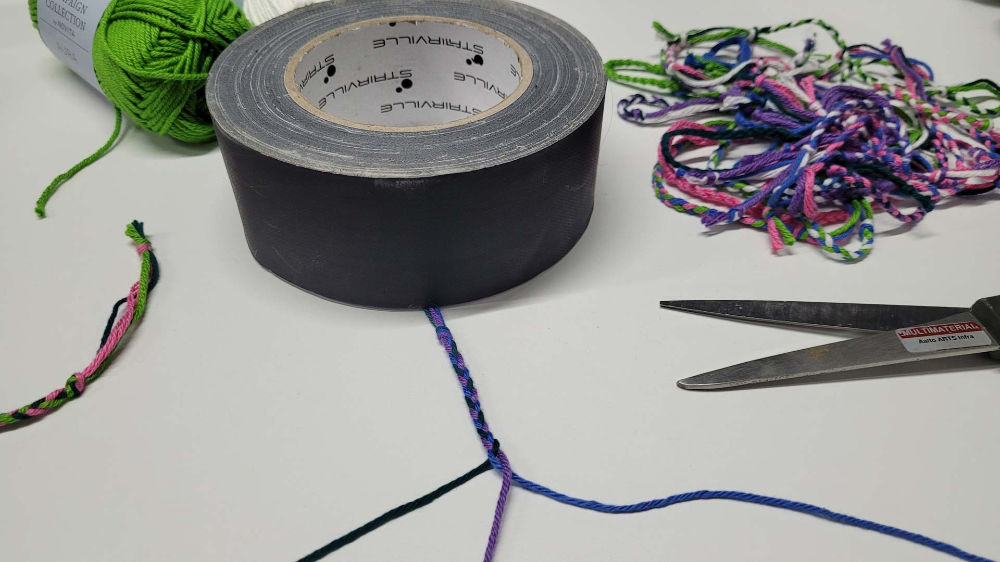
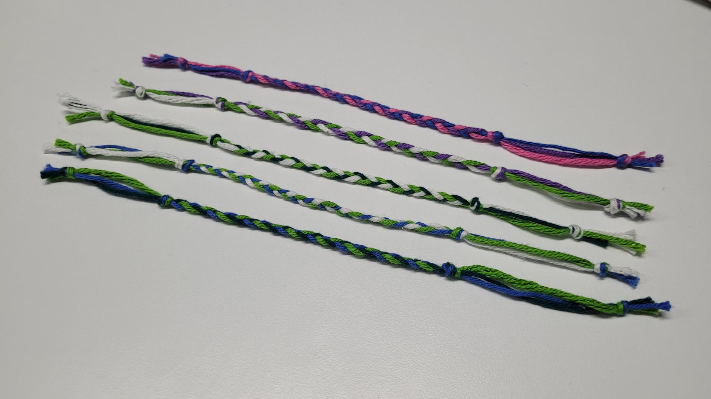
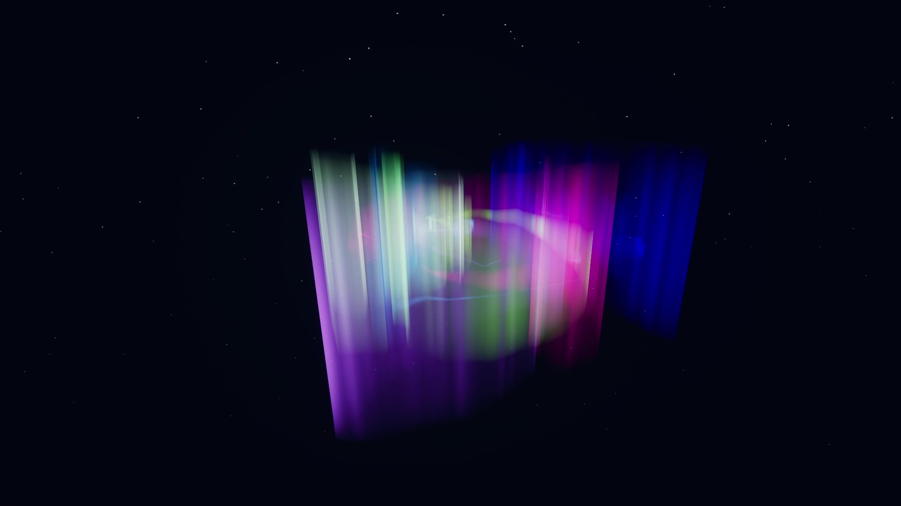
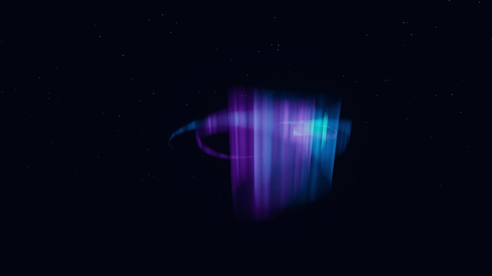
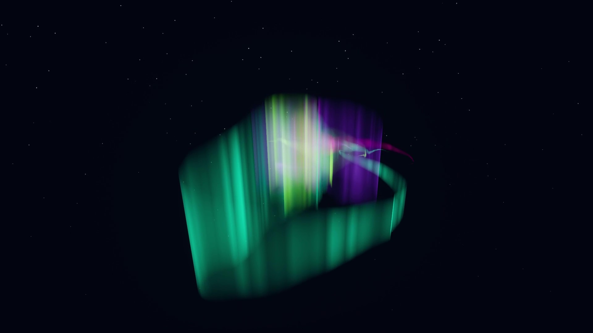
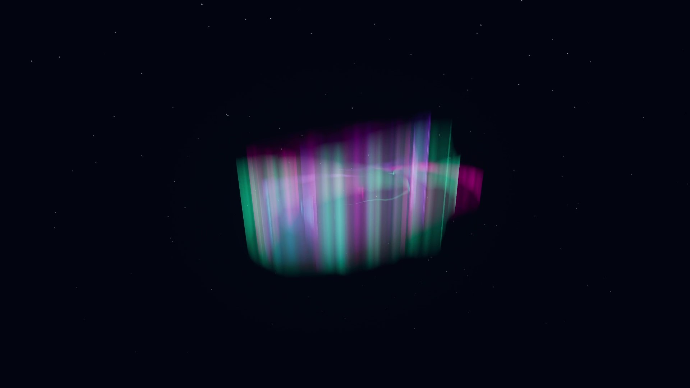

AURORA
Embodied Interaction as a Means of Expression for Children at the Helsinki German School
The written thesis is available at Aaltodoc, the institutional repository of Aalto University:
https://urn.fi/URN:NBN:fi:aalto-202606175232
AURORA is an interactive experience that uses the ZED 2i stereo camera and Unreal Engine 5 to create virtual
auroras that follow users’ movements. On 16 April 2024, a total of 21 third-graders from the Helsinki German
School participated in a workshop during the after-school programme. In this workshop, the children were
divided into four groups and asked to interact with AURORA to express friendship.
Findings
Employing practice-based, qualitative research methods, this Master’s thesis project gathered data through
participant observations and semi-structured group interviews. Findings indicate that AURORA provided an
engaging creative outlet for children to articulate their social bonds, facilitated spontaneous group
collaboration, and allowed them to build creative metaphors between auroras and friendships while actively
promoting physical play. Furthermore, the study offers insights into designing non-invasive interactive
technologies for children within informal group environments, emphasizing the importance of centring
children's perspectives throughout the design process.
By comparing all groups side by side with both the observational camera footage and the OBS screen-recordings
as well as a timestamp, I found similarities and patterns in their interactions. The main finding of my
observations was a phenomenon I named “aurora swirl”. When the children held hands and spun in circles, the
auroras mixed into a great white burst of colour. These aurora swirls occurred in all of the group
interactions, appearing simultaneously at the timestamps 02:50 and 06:30.


Setup and Configuration
My assistant Raphael and I set up the project at the gym hall of the Helsinki German School.


Friendship Bracelets
I wanted to have a little present for the children as a reward for participating in the workshop. When I came
up with the idea of expressing friendship through my programme AURORA, I eventually had the idea to create
friendship bracelets made of cotton yarn in aurora colours. And so I bought six balls of white, green, dark
seagreen, blue, purple, and pink cotton yarn.
The bracelets were made of three different coloured threads, resulting in a total of twenty possible colour
combinations. To be sure that every participant and other person involved in the workshop gets one friendship
bracelet, I made two bracelets in each of the twenty colour combinations—a total of forty bracelets.




Background and Objective
In spring 2019, I did an Erasmus+ semester abroad at the University of Lapland in Rovaniemi, the capital of Finnish Lapland. I have always been fascinated by natural phenomena, and so one main reason for my choice to go there was to witness auroras. Watching auroras by myself was soothing and meditative, but it was even better when sharing the joy with the friends I made during this exchange. Gazing at the colourful night sky became a social event, creating lasting memories.


Friendships have always been an important part—if not the most important part—of my life. I met my closest friends at primary school, in high school, in my Bachelor’s studies, and also during my Master’s studies at Aalto University. And so, I desired to have friendship as another central theme in my Master's thesis.


In summer 2021, I eventually moved to Helsinki. Before starting my studies at Aalto University, I started a job as an after-school programme instructor at the Helsinki German School in January 2022 for six months. The job was motivating and rewarding, as the children were joyful, curious, and full of energy—no day was the same. I also enjoy working with children because of their vast and unpredictable imaginations. Throughout my studies, I developed a passion for interactive experiences besides video games, which was my initial motivation to start studying. My favourite tools are 3D software, especially the game engine Unreal Engine, which I have used since 2018.


With AURORA, my aim was to create an interactive programme designed for children to participate in a workshop, in which they would find creative ways of expressing their friendships through virtual auroras by engaging in social and playful interactions as groups. Ultimately, with the results of my project, I want to contribute useful insights to the field of embodied interaction with a focus on child-computer interaction (CCI).


Year
2024–2026
Type
Master's Thesis Project:
Interactive Experience